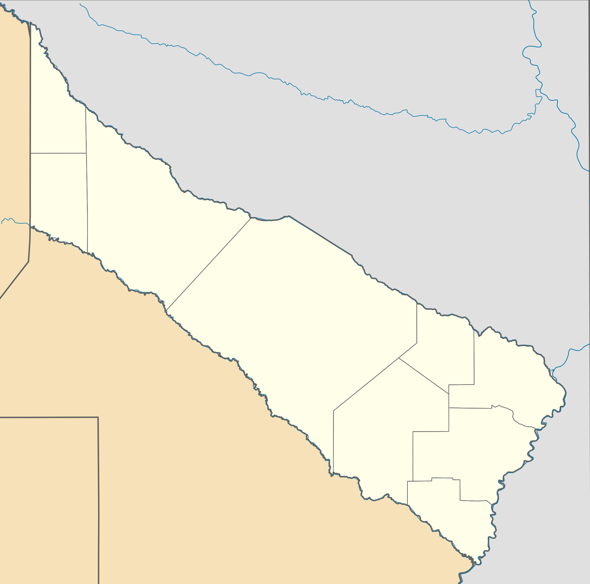
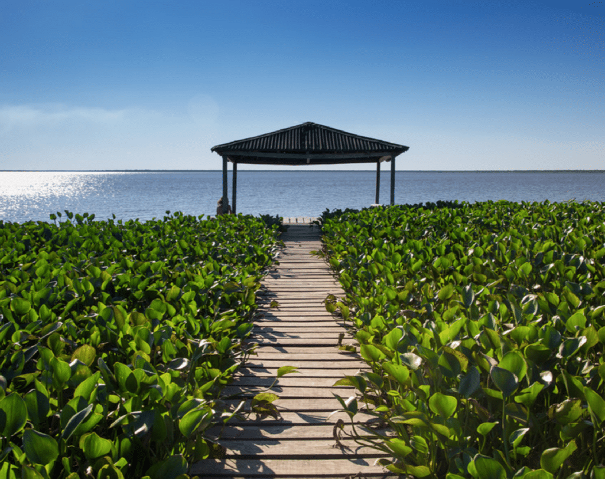
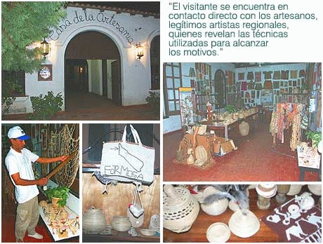
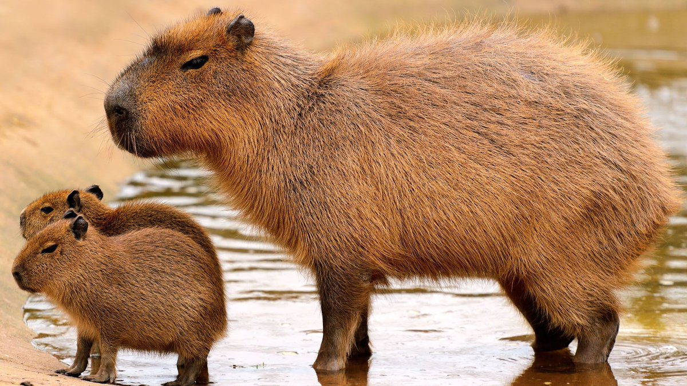
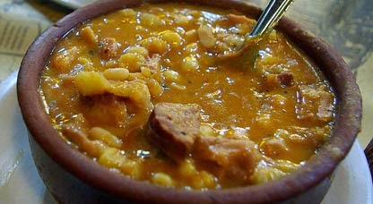
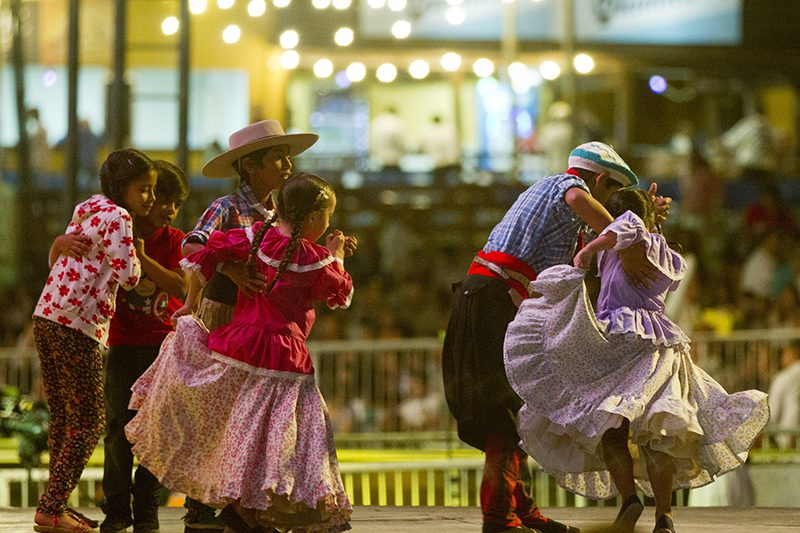
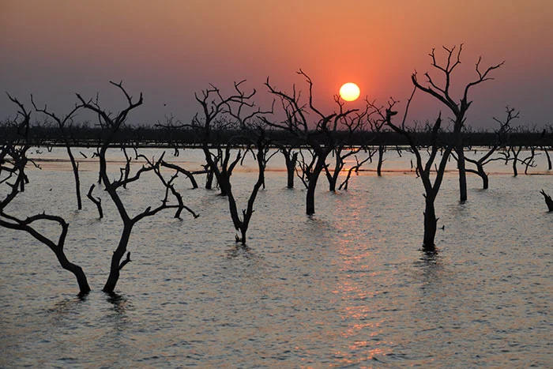

¿Donde se ubica Formosa?
Formosa es una provincia ubicada en el norte de Argentina, limitada al norte por Paraguay, al sur por la provincia de Chaco, al este por el río Paraguay, y al oeste por la provincia de Salta. Su capital es la ciudad de Formosa, que también es el centro económico y cultural de la provincia.

Lugares turísticos de Formosa
Formosa ofrece destinos como el Parque Nacional Pilcomayo, ideal para el avistaje de aves, la Laguna Oca para actividades acuáticas, y la Reserva de Bañado La Estrella, rica en fauna. También destacan la Plaza San Martín y la Iglesia de Nuestra Señora del Carmen. El Parque Nacional Pilcomayo es el más visitado por su biodiversidad y accesibilidad.

¿Cómo es la economía en Formosa?
La economía de Formosa se basa principalmente en la agricultura (soja, maíz, trigo), la ganadería (especialmente bovina) y la pesca. También tiene un importante sector industrial ligado a la agroindustria, como la molienda de oleaginosas. Además, el comercio y los servicios son clave, con énfasis en el turismo y las actividades relacionadas con el comercio fronterizo debido a su cercanía con Paraguay.

La cultura en Formosa
La cultura de Formosa mezcla influencias indígenas (Qom, Mokoví) y tradicionales, destacando sus artesanías, música folklórica (zamba, chacarera) y festividades como el Festival del Litoral. Su gastronomía incluye platos como surubí y chipá.

¿Cuáles son los animales de Formosa?
En Formosa, se pueden encontrar una gran variedad de animales, tanto terrestres como acuáticos. Entre ellos destacan el yaguareté, ciervo de los pantanos, capibara, carpincho y diversas especies de aves, como el aguará guazú y el tucán. En los ríos y humedales habitan reptiles como el yacaré y el lagarto overo. La biodiversidad de la región es especialmente rica en el Parque Nacional Pilcomayo y la Reserva de Bañado La Estrella.

¿Cuál es la comida típica de Formosa?
La gastronomía de Formosa incluye platos tradicionales como el chipá (panecillo de mandioca y queso), el surubí (pescado de río, preparado de diversas formas), el mbejú (pastelito de mandioca y queso), la sopa paraguaya (pastel de maíz, queso y cebolla) y el locro (guiso de maíz, carne y vegetales). Además, se destacan las carnes asadas y los jugos naturales de frutas locales.

¿Cuál es la musica típica en Formosa?
La música típica de Formosa está influenciada por el folklore del noreste argentino, destacando géneros como la zamba, chacarera, polka y guarania. También tiene una fuerte presencia de ritmos indígenas y la música de los pueblos originarios, como los Qom y Mokoví, que se expresa en danzas y canciones tradicionales.

¿Cómo es el clima en Formosa?
El clima en Formosa es tropical y subtropical, con veranos calurosos y húmedos e invierno suave. Las temperaturas en verano pueden superar los 35°C, mientras que en invierno rondan los 15-20°C. La lluvia es frecuente, especialmente en los meses de verano, y las precipitaciones anuales son moderadas a altas.

¿Cómo es la agricultura en Formosa?
La agricultura en Formosa es un sector fundamental de su economía, destacándose el cultivo de soja, maíz, trigo, sorgo y maní. La producción de arroz también es importante, especialmente en áreas de riego cercanas al río Pilcomayo. Además, la agricultura familiar juega un papel relevante, cultivando frutas y verduras para el consumo local. Aunque el clima es favorable para la agricultura, la provincia enfrenta desafíos como sequías e inundaciones que afectan la producción.